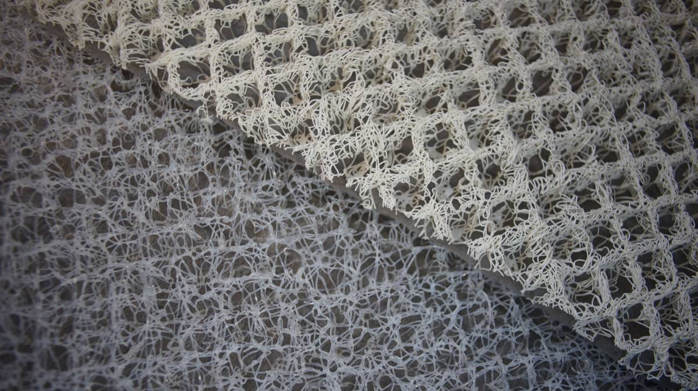

moisture prevention underliner

In winter, living on a plastic boat means having to fight condensation. Insulation plays a big part in limiting condensation, but allowing air to flow is just as important.
We've done without underliners for the past 3 years (now December 2023), but this year we wanted to try something different. We got a sheet of high-strength mesh material that helps elevate cushions, promoting good airflow which can help reduce condensation as well mildew/mold growth. This material is made from a series of thickly-coiled polypropylene strands(sold under a variety of names), which creates a firm but open surface through which air can flow(presumably). The woven mat is topped by a light synthetic fabric layer that provides a smooth surface for a cushion to rest on.

The material can be cut larger than the cushion width and length on sides that come into contact with the hull so that air can flow all around the cushion.
This material is lightweight, and can be cut with scissors. When cutting little bits of stiff material will come off, be sure to scoop those up afterwards. Sheets are a maximum of 99cm (39 in) wide and 19 mm(3/4 in) thick, but can be joined together to cover the size of a berth. When trying to fit cushion measurements on two 99cm(39 in) adjoined sheets, try to keep the 'seam' somewhere convenient, so that it won't break off easily. For instance, for the v-berth cushion we adjoined two sheets, and split the largest V-shaped cushion in two, with the seam in the center.
Even with this material in place, lifting the cushions once in a while to let them air out is good practice. We will be testing this material this year to see if it keeps our berths dry.
Alternatives:
There are many similar products on the market. All are also polypropylene-based meshes, ranging in thickness and price, used in...
Gardening. To place under pots on deck.
Construction. As rain screens, floor/wall/roof drainage.
After much research we have found those options are mostly available in the US, not in Canada(we haven't looked outside of North America). Options sold as mattress underlays, or marketed to boaters, usually have higher price markups.
Search Keywords: Aeration Pads, Air Gap Underlayments, Green Roof Drainage, Wall Ventilation Mats, Rain Screens, and Wall Drainage Mats.
Product names: Genuine Hypervent, Dry Mesh, Hyperdrii, Hypervent Aire-Flow, etc.
Thickness. All of the above options come in different thickness. Many are thinner than 19 mm(3/4 in), but we found some ranging from 10 mm(1/4 in), the only issue is that they're sometimes sold in rolls of 30 m(100 ft). It may be a good option to pair up with someone to get a roll.
Sources. We found similar products at hardware/home stores like Home Depot(American outlets only), and through companies like Enkadrain(only available in large rolls, 30 m minimum) Defender.com sells a quality version of this material by the foot, and is cheaper than many Canadian sources. Sailrite sells similar 1.5x2.3 m|9.5mm thick(60x90x3/8 in) mesh underliners. Many Canadian sources of this material are very different structurally and visually than some of the ones found in the US.
So-called Genuine Hypervent(lower left of the picture, sourced from Defender.com an American reseller) is a darker gray and the mesh isn't as regular, the fabric backing is also much tougher, Hyperdrii(right of the picture, found locally in Canada) is bright white, and the mesh is very organized and grid-like. See the photo below for comparison:
We have found that the airing material with an organized mesh collapses more readily than those that don't, the. We bought a sheet from two different sources to test both designs. The design with the organized mesh could still help to keep cushions dry, but may not be as useful when placed under a lot of weight. We'll let you know how both have performed in the spring.